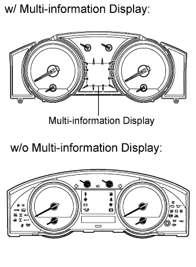
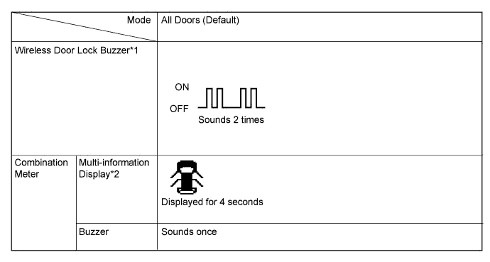
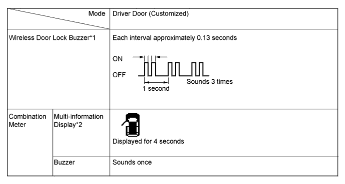

ENTRY AND START SYSTEM (for Entry Function) > CUSTOMIZE PARAMETERS |
| CUSTOMIZING FUNCTION WITH INTELLIGENT TESTER |
Connect the intelligent tester to the DLC3.
Turn the engine switch on (IG).
Turn the intelligent tester on.
Enter the following menus: Customize Setting.
Select the setting by referring to the table below.
| Display | Default | Contents | Setting |
| Ignition Area (Entry ignition available area) | ALL | Function to choose the available area for the key to start the engine and cancel the steering lock. | FRONT/ALL* |
| Park Wait Time (Waiting time to permit unlocking door after locking) | 2.5s | Function that sets the waiting time to permit unlocking the door after the door is locked with the entry lock function. | 0.5s/1.5s/2.5s/5s |
| Back Door Opening Operation (Back door open mode when vehicle is locked) | LONG | Back door opening the operation. | LONG/TWICE/OFF |
| Display | Default | Contents | Setting |
| Passenger Take Key | ON | Warn a key is taken out by fellow passengers | ON/OFF |
| Key Low Battery Warning (Warn when key battery becomes weak) | ON | Function that warns the driver that the key battery power is low. | ON/OFF |
| Key Out Range Warning | ON | Warn Starting E/G when the key is out of range | ON/OFF |
| ENTRY UNLOCK MODE SWITCHING FUNCTION |
To use the entry unlock mode switching function, make sure the engine switch is off and simultaneously press and hold the lock switch on the key and another key switch for 5 seconds.
The certification ECU (smart key ECU assembly) receives this signal from the door control receiver and changes the entry and start system to the entry unlock mode.
 |
The certification ECU (smart key ECU assembly) sounds the wireless door lock buzzer and combination meter buzzer to inform the user that the mode has been switched.


| KEY CANCEL |
The operation procedures are as follows:
Precondition:
Engine switch off, driver side door closed and unlocked.
Unlock the driver side door once with the unlock switch of the key.
Open the driver door within 5 seconds.
Unlock the driver side door twice with the unlock switch of the key within 5 seconds.
Perform close → open twice for the driver door within 30 seconds.
(Driver door: Open condition → Close → Open → Close → Open)
Unlock the driver side door twice with the unlock switch of the key within 5 seconds.
Perform close → open once for the driver door within 30 seconds.
(Driver door: Open condition → Close → Open)
Close the driver door within 5 seconds.
When key cancel is activated, the wireless door lock buzzer sounds twice.
To return to the original condition, perform the procedures again. When the original condition is returned, the wireless door lock buzzer sounds once.
| WIRELESS BUZZER VOLUME ADJUSTMENT (Click here). |